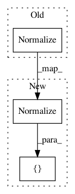

22fe4465c120ac92a2de09c3c2d50cbbe0e63f29,data/base_dataset.py,,get_transform,#Any#Any#Any#Any#Any#,81
Before Change
if convert:
transform_list += [transforms.ToTensor(),
transforms.Normalize((0.5, 0.5, 0.5),
(0.5, 0.5, 0.5))]
return transforms.Compose(transform_list)
After Change
if grayscale:
transform_list += [transforms.Normalize((0.5,), (0.5,))]
else:
transform_list += [transforms.Normalize((0.5, 0.5, 0.5), (0.5, 0.5, 0.5))]
return transforms.Compose(transform_list)
def __make_power_2(img, base, method=Image.BICUBIC):
In pattern: SUPERPATTERN
Frequency: 3
Non-data size: 3
Instances
Project Name: junyanz/pytorch-CycleGAN-and-pix2pix
Commit Name: 22fe4465c120ac92a2de09c3c2d50cbbe0e63f29
Time: 2019-04-14
Author: junyanzhu89@gmail.com
File Name: data/base_dataset.py
Class Name:
Method Name: get_transform
Project Name: junyanz/BicycleGAN
Commit Name: 5a72ca2e2bd254022361c6c9882f941bfb1ec1ea
Time: 2019-04-14
Author: junyanzhu89@gmail.com
File Name: data/base_dataset.py
Class Name:
Method Name: get_transform
Project Name: mapbox/robosat
Commit Name: 2067cb7429ffd95efc3d9ace255b234831615d39
Time: 2018-06-28
Author: daniel@trvx.org
File Name: robosat/tools/train.py
Class Name:
Method Name: get_dataset_loaders